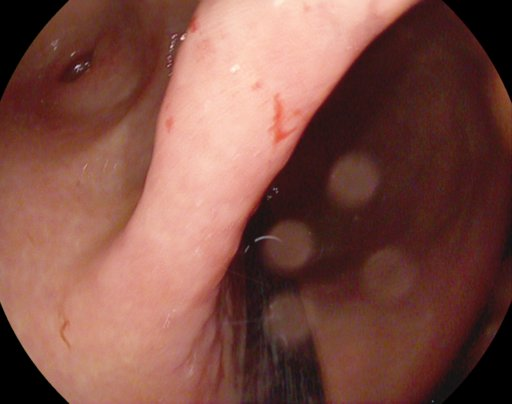
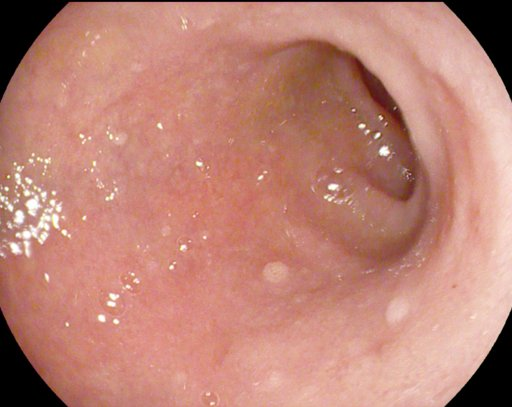
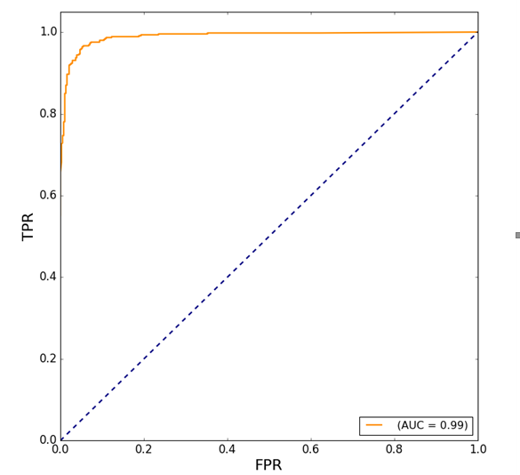
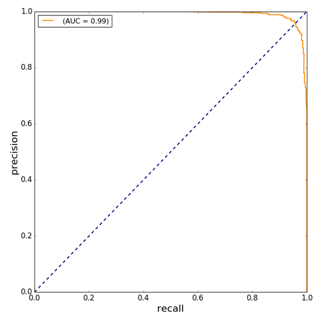
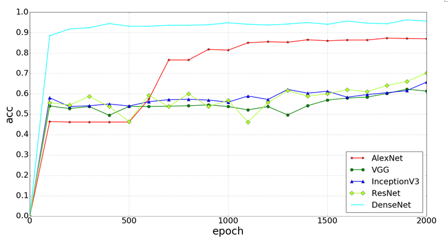
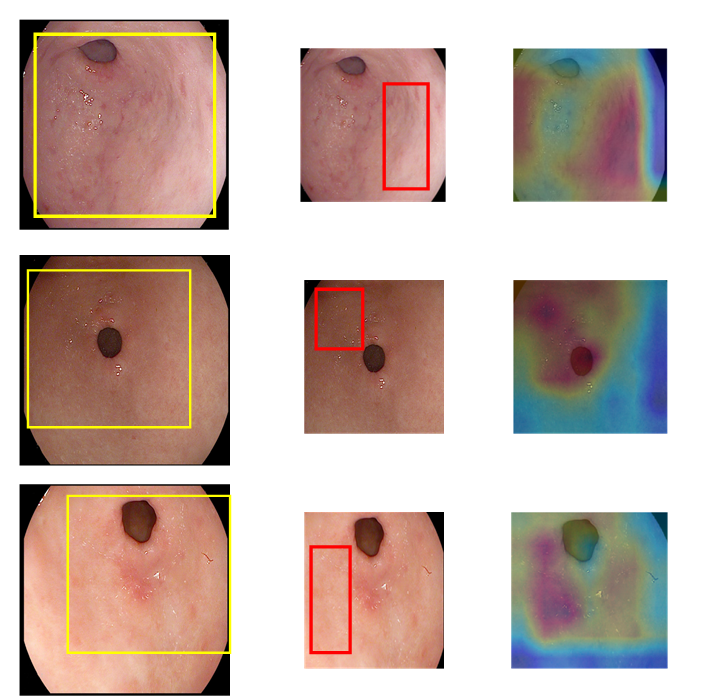

Imágenes y modelo CAG
Sube imágenes endoscópicas y compáralas con el modelo de detección de gastritis atrófica crónica (CAG, DenseNet-121).
⚠️ Herramienta experimental, no diagnóstica
El resultado del modelo es orientativo y se basa en un modelo de investigación entrenado con un conjunto limitado de imágenes. No es un diagnóstico ni un producto sanitario validado. La decisión clínica corresponde siempre al profesional.Subir imagen
Arrastra una imagen aquí o pulsa para elegirla.
Formatos: JPG, PNG, BMP. Se guarda de forma privada en tu espacio de profesionales.
Análisis y comparación
Imagen del paciente
Referencia del modelo


Compara visualmente la mucosa del paciente con los ejemplos de referencia del modelo.
Mis imágenes
Aún no has subido ninguna imagen.
Sobre el modelo CAG
Modelo de investigación (DenseNet-121) de Yuan Fuqiang y el servicio de digestivo del Shanxi Provincial People's Hospital, para la detección de gastritis atrófica crónica en imágenes de antro gástrico. Rendimiento publicado por los autores: sensibilidad ≈ 95,9 %, especificidad ≈ 94 %.



